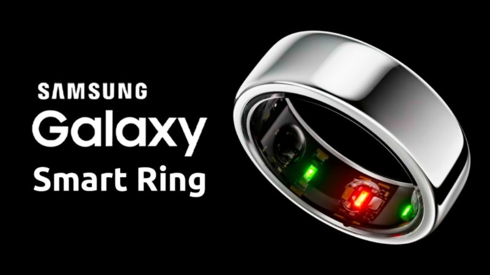

o Galaxy Ring é o primeiro anel inteligente da Samsung. O wearable é focado no monitoramento da saúde e, neste quesito, apresenta funções semelhantes às de smartwatches, mas se propõe a ser uma opção mais confortável para uso diário — principalmente na hora de dormir.
